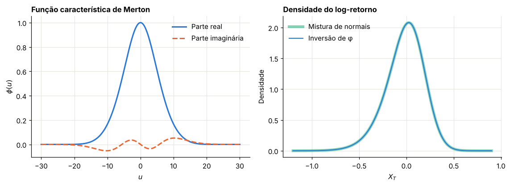
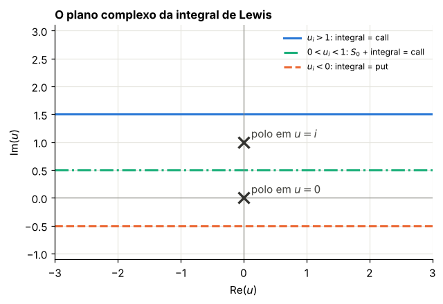
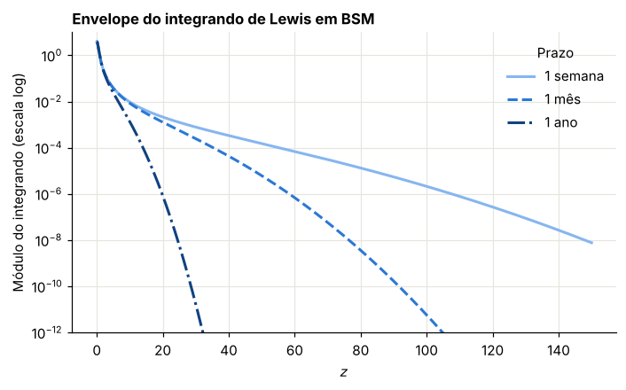

Módulo 7 — Fourier I: da função característica à fórmula de Lewis#
Curso: Derivativos com Python, a partir de Derivatives Analytics with Python (Y. Hilpisch, Wiley, 2015). Este módulo cobre: seções 6.1 a 6.4.1 do livro. Carr-Madan, FFT e convolução ficam para o Módulo 8.
O que você vai conseguir fazer ao final#
Calcular a transformada de Fourier de funções simples e usar suas propriedades.
Entender por que a função característica é o objeto certo para precificar.
Deduzir a função característica de modelos com saltos.
Deduzir a fórmula de Lewis passo a passo, incluindo a integral no plano complexo.
Avaliá-la numericamente, sabendo como escolher limite e malha.
Identificar quando o método perde precisão.
O problema#
Toda opção europeia é uma integral do payoff contra a densidade neutra ao risco:
Fora do BSM, a densidade \(q\) em geral não tem fórmula. Mas em Merton, Heston e BCC97, a função característica tem. A ideia desta família de métodos é trocar a integral na variável de preço por uma integral na variável de frequência, em que os dois ingredientes são conhecidos.
Foi o que usamos como caixa-preta no Módulo 2.
0. Preparação#
from time import perf_counter
import numpy as np
import pandas as pd
import matplotlib.pyplot as plt
import mpmath as mp
from scipy.integrate import quad, simpson
from scipy.stats import norm, poisson
from IPython.display import display
AZUL, LARANJA, VERDE, CINZA = "#2a78d6", "#eb6834", "#1baf7a", "#8a8a84"
RAMPA = ["#86b6ef", "#2a78d6", "#104281"]
plt.rcParams.update({
"figure.figsize": (7.2, 4.0), "figure.dpi": 110,
"axes.spines.top": False, "axes.spines.right": False,
"axes.grid": True, "grid.color": "#e6e5df", "grid.linewidth": 0.8,
"axes.axisbelow": True, "axes.titlesize": 11, "axes.titleweight": "bold",
"axes.titlelocation": "left", "lines.linewidth": 2.0, "legend.frameon": False,
"font.size": 10,
})
def f3(x):
"""Formata com três casas decimais no padrão brasileiro."""
return f"{x:,.3f}".replace(",", "§").replace(".", ",").replace("§", ".")
def tabela(df):
"""Exibe um DataFrame com os números reais em três casas decimais."""
def fmt(v):
if isinstance(v, (float, np.floating)):
return "n/d" if np.isnan(v) else f3(v)
return v
display(df.map(fmt))
_checks = {"n": 0}
def ok(condicao, mensagem):
"""Verificação do laboratório: interrompe o notebook se a conta não fechar."""
assert bool(condicao), f"FALHOU: {mensagem}"
_checks["n"] += 1
print(f"OK — {mensagem}")
def bsm(S, K, T, r, sig, tipo="call"):
d1 = (np.log(S / K) + (r + 0.5 * sig**2) * T) / (sig * np.sqrt(T))
d2 = d1 - sig * np.sqrt(T)
if tipo == "call":
return S * norm.cdf(d1) - K * np.exp(-r * T) * norm.cdf(d2)
return K * np.exp(-r * T) * norm.cdf(-d2) - S * norm.cdf(-d1)
print("Ambiente pronto.")
Ambiente pronto.
1. A transformada de Fourier#
Livro: §6.3
1.1 Definição#
Usaremos a convenção do livro. A transformada de Fourier de \(f\) é
e a fórmula de inversão recupera a função:
Intuição: \(e^{iux} = \cos(ux) + i\sin(ux)\) é uma oscilação de frequência \(u\). \(\hat f(u)\) mede quanto dessa frequência existe em \(f\). Inverter é recompor a função somando todas as frequências.
1.2 Exemplo: a gaussiana#
Seja \(f(x) = \varphi(x)\), a densidade normal padrão. Completamos o quadrado no expoente:
Assim,
A integral restante vale 1, mesmo com o deslocamento complexo. A transformada de uma gaussiana é outra gaussiana. Note a relação inversa entre as larguras: estreita em \(x\) significa larga em \(u\). É a origem da dificuldade para opções de prazo curto.
1.3 A propriedade que importa#
Se \(X\) e \(Y\) são independentes com densidades \(f\) e \(g\), a densidade de \(X+Y\) é a convolução
Convoluções são difíceis. Mas, na transformada, viram produto:
Prova, com a troca de variável \(y = z - x\):
Essa é a razão de tudo funcionar. Log-preços são somas de muitos incrementos independentes: a densidade é uma convolução intratável; a transformada, um produto simples.
1.4 Relação de Parseval#
Para funções \(f, g\) de quadrado integrável:
Um produto interno em \(x\) é igual a um produto interno em \(u\). Note o paralelo com a precificação: o valor da opção é um produto interno entre payoff e densidade. Daí, transformamos os dois.
Laboratório 1.1 — Propriedades, numericamente#
x = np.linspace(-12, 12, 12001)
def transformada(f_val, u):
return simpson(np.exp(1j * u * x) * f_val, x=x)
u_g = np.linspace(-6, 6, 25)
f_a = norm.pdf(x)
num = np.array([transformada(f_a, u) for u in u_g])
ok(np.max(np.abs(num - np.exp(-(u_g**2) / 2))) < 1e-8, "a transformada da gaussiana é e^(−u²/2)")
g1, g2 = norm.pdf(x, 0.5, 0.7), norm.pdf(x, -1.0, 1.2)
conv = np.convolve(g1, g2, mode="same") * (x[1] - x[0])
referencia = norm.pdf(x, -0.5, np.hypot(0.7, 1.2))
ok(np.max(np.abs(conv - referencia)) < 1e-3, "convolução de normais é a normal da soma")
us = np.array([0.3, 1.0, 2.5])
lado_e = np.array([transformada(referencia, u) for u in us])
lado_d = np.array([transformada(g1, u) * transformada(g2, u) for u in us])
ok(np.max(np.abs(lado_e - lado_d)) < 1e-8, "a transformada da convolução é o produto das transformadas")
u_p = np.linspace(-30, 30, 6001)
hat1 = np.array([transformada(g1, u) for u in u_p[::10]])
hat2 = np.array([transformada(g2, u) for u in u_p[::10]])
esq = simpson(g1 * g2, x=x)
dir_ = (simpson(hat1 * np.conj(hat2), x=u_p[::10]) / (2 * np.pi)).real
print("Parseval: lado em x =", f3(float(esq)), "| lado em u =", f3(float(dir_)))
ok(abs(esq - dir_) < 1e-8, "relação de Parseval")
OK — a transformada da gaussiana é e^(−u²/2)
OK — convolução de normais é a normal da soma
OK — a transformada da convolução é o produto das transformadas
Parseval: lado em x = 0,160 | lado em u = 0,160
OK — relação de Parseval
2. Funções características#
Livro: §6.3, Definição 41
2.1 Definição e propriedades#
A função característica de \(X\) é a transformada de Fourier de sua densidade:
Propriedades que vamos usar:
Propriedade |
Motivo |
|---|---|
\(\phi(0) = 1\) |
a densidade integra 1 |
\(\lvert\phi(u)\rvert \le 1\) para \(u\) real |
\(\lvert e^{iux}\rvert = 1\) |
\(\phi(-u) = \overline{\phi(u)}\) para \(u\) real |
\(X\) é real |
\(X, Y\) independentes: \(\phi_{X+Y} = \phi_X\phi_Y\) |
seção anterior |
Sempre existe para \(u\) real |
ao contrário da função geradora de momentos |
2.2 Cumulantes#
Tomando o logaritmo, obtemos os cumulantes \(c_n\), que somam em variáveis independentes:
Em termos dos cumulantes: assimetria \(= c_3/c_2^{3/2}\) e curtose em excesso \(= c_4/c_2^2\). Como a soma de \(n\) termos iid tem cumulantes multiplicados por \(n\), a assimetria cai com \(1/\sqrt n\) e a curtose com \(1/n\). É o que vimos com o passeio aleatório do Módulo 4, e explica por que o sorriso do Merton se achata com o prazo.
2.3 Argumento complexo e condição de martingale#
Para o que vem a seguir, precisamos de \(\phi\) em argumentos complexos. Escrevendo \(u = -i\):
Vamos sempre escrever \(S_T = S_0 e^{rT + X_T}\). O índice descontado é martingale se e só se
Atenção: com argumento complexo a integral pode divergir. \(\phi\) só existe numa faixa de \(\text{Im}(u)\), determinada pelos momentos de \(X\). Para a normal, a faixa é o plano inteiro. Para modelos como o Heston, ela é limitada, e isso tem consequências práticas.
2.4 Dois exemplos#
BSM. \(X_T = -\tfrac12\sigma^2T + \sigma Z_T\), normal com média \(-\tfrac12\sigma^2T\) e variância \(\sigma^2T\):
Merton (1976). \(X_T = \omega T + \sigma Z_T + \sum_{j=1}^{N_T}J_j\), com \(J_j \sim N(\mu_J, \delta^2)\) e \(N_T\) Poisson. Calculamos a parte de saltos condicionando em \(N_T\):
usando a série da exponencial, com \(\phi_J(u) = e^{iu\mu_J - u^2\delta^2/2}\). Juntando os termos:
O termo \(\omega\) é o que garante a condição de martingale. Exigindo \(\phi(-i) = 1\):
Laboratório 2.1 — Recuperando densidade e momentos#
Invertemos a função característica de Merton para obter a densidade, e comparamos com a mistura exata de normais. Depois calculamos os cumulantes com derivadas em alta precisão.
def cf_bsm(u, T, sigma):
return np.exp(-0.5 * sigma**2 * T * (1j * u + u**2))
def cf_merton(u, T, sigma, lam, mu, delta):
omega = -0.5 * sigma**2 - lam * (np.exp(mu + 0.5 * delta**2) - 1)
return np.exp(T * (1j * u * omega - 0.5 * sigma**2 * u**2 + lam * (np.exp(1j * u * mu - 0.5 * u**2 * delta**2) - 1)))
M76 = dict(sigma=0.15, lam=0.8, mu=-0.12, delta=0.10)
T1 = 1.0
ok(abs(cf_merton(0.0, T1, **M76) - 1) < 1e-14, "φ(0) = 1")
ok(abs(cf_merton(-1j, T1, **M76) - 1) < 1e-14, "condição de martingale: φ(−i) = 1")
ok(abs(cf_bsm(-1j, T1, 0.2) - 1) < 1e-14, "condição de martingale para o BSM")
xg = np.linspace(-1.2, 0.9, 421)
ug = np.linspace(-120, 120, 48001)
fi = cf_merton(ug, T1, **M76)
dens_cf = np.array([simpson((np.exp(-1j * ug * x_) * fi).real, x=ug) for x_ in xg]) / (2 * np.pi)
omega = -0.5 * M76["sigma"] ** 2 - M76["lam"] * (np.exp(M76["mu"] + 0.5 * M76["delta"] ** 2) - 1)
dens_mix = np.zeros_like(xg)
for n in range(40):
dens_mix += poisson.pmf(n, M76["lam"] * T1) * norm.pdf(xg, omega * T1 + n * M76["mu"], np.sqrt(M76["sigma"] ** 2 * T1 + n * M76["delta"] ** 2))
fig, (a1, a2) = plt.subplots(1, 2, figsize=(10.5, 3.9))
ur = np.linspace(-30, 30, 1201)
fi_r = cf_merton(ur, T1, **M76)
a1.plot(ur, fi_r.real, color=AZUL, label="Parte real")
a1.plot(ur, fi_r.imag, color=LARANJA, ls="--", label="Parte imaginária")
a1.set_title("Função característica de Merton")
a1.set_xlabel("$u$")
a1.set_ylabel("$\\phi(u)$")
a1.legend()
a2.plot(xg, dens_mix, color=VERDE, lw=4, alpha=0.55, label="Mistura de normais")
a2.plot(xg, dens_cf, color=AZUL, lw=1.4, label="Inversão de φ")
a2.set_title("Densidade do log-retorno")
a2.set_xlabel("$X_T$")
a2.set_ylabel("Densidade")
a2.legend()
plt.tight_layout()
plt.show()
ok(np.max(np.abs(dens_cf - dens_mix)) < 1e-8, "a inversão de φ reproduz a densidade exata")
def cumulantes(cf, n_max=4):
"""Derivadas do logaritmo de E[exp(tX)] em t = 0, por mpmath com alta precisão."""
mp.mp.dps = 40
psi = lambda t: mp.log(cf(t))
return [float(mp.diff(psi, 0, n)) for n in range(1, n_max + 1)]
def mgf_merton(t, T=T1, sigma=M76["sigma"], lam=M76["lam"], mu=M76["mu"], delta=M76["delta"]):
omega = -sigma**2 / 2 - lam * (mp.e ** (mu + delta**2 / 2) - 1)
return mp.e ** (T * (omega * t + sigma**2 * t**2 / 2 + lam * (mp.e ** (mu * t + delta**2 * t**2 / 2) - 1)))
c1, c2, c3, c4 = cumulantes(mgf_merton)
s, l_, m_, d_ = M76["sigma"], M76["lam"], M76["mu"], M76["delta"]
teoria = [omega * T1 + l_ * m_ * T1, (s**2 + l_ * (m_**2 + d_**2)) * T1, l_ * T1 * (m_**3 + 3 * m_ * d_**2), l_ * T1 * (m_**4 + 6 * m_**2 * d_**2 + 3 * d_**4)]
tabela(pd.DataFrame({"Cumulante": ["c1", "c2", "c3", "c4"], "Da função característica": [c1, c2, c3, c4], "Fórmula direta": teoria}))
ok(np.allclose([c1, c2, c3, c4], teoria, rtol=1e-10), "os cumulantes da função característica batem com as fórmulas")
rng = np.random.default_rng(801)
N = rng.poisson(l_ * T1, 3_000_000)
X_ = omega * T1 + s * np.sqrt(T1) * rng.standard_normal(N.size) + N * m_ + np.sqrt(N) * d_ * rng.standard_normal(N.size)
print("Assimetria teórica:", f3(c3 / c2**1.5), "| Curtose teórica:", f3(c4 / c2**2))
ok(abs(np.var(X_) - c2) < 2e-4, "a variância simulada confere")
OK — φ(0) = 1
OK — condição de martingale: φ(−i) = 1
OK — condição de martingale para o BSM

OK — a inversão de φ reproduz a densidade exata
| Cumulante | Da função característica | Fórmula direta | |
|---|---|---|---|
| 0 | c1 | -0,020 | -0,020 |
| 1 | c2 | 0,042 | 0,042 |
| 2 | c3 | -0,004 | -0,004 |
| 3 | c4 | 0,001 | 0,001 |
OK — os cumulantes da função característica batem com as fórmulas
Assimetria teórica: -0,495 | Curtose teórica: 0,621
OK — a variância simulada confere
3. A fórmula de Lewis, passo a passo#
Livro: §6.4.1
Passo 1: transformar o payoff#
Com \(s = \ln S_T\), o payoff é \(C_T(s) = \max(e^s - K, 0)\). Note um problema: ele não é integrável, pois cresce sem limite. A transformada só existe se \(u\) tiver parte imaginária suficientemente grande, que produz um amortecimento.
Seja \(u = u_r + iu_i\). Como \(|e^{ius}| = e^{-u_is}\), a integral converge em \(s \to +\infty\) se \(u_i > 1\). Calculando:
Com \(u_i > 1\), o limite superior é zero. No limite inferior, \(e^{(iu+1)\ln K} = K^{iu+1}\) e \(K\,e^{iu\ln K} = K^{iu+1}\):
Passo 2: inverter e trocar a ordem#
Escrevemos o payoff pela inversão, numa reta com \(u_i > 1\), e aplicamos a esperança:
Passo 3: colocar a função característica#
Como \(s = \ln S_T = y + X_T\), com \(y = \ln S_0 + rT\):
Com \(k = \ln(S_0/K) + rT\), juntamos \(K^{iu}\) com \(e^{-iuy}\), ficando \(e^{-iuk}\):
Passo 4: atravessar um polo#
O denominador é \(u^2 - iu = u(u-i)\): há polos em \(u = 0\) e \(u = i\). A reta original está acima de ambos. Queremos descer para \(0 < u_i < 1\), onde \(\phi(u - i/2)\) é melhor comportada.
O teorema dos resíduos diz que, ao mover a reta através de um polo, a integral muda de \(2\pi i\) vezes o resíduo. O resíduo em \(u = i\) é
Usando \(e^k = (S_0/K)e^{rT}\), \(\phi(-i) = 1\) (martingale!) e \(1/i = -i\), sobra \(\text{Res}(i) = \dfrac{iS_0}{2\pi}\).
A integral em \(u_i > 1\) é a integral em \(u_i \in (0,1)\) menos \(2\pi i\,\text{Res}(i) = -S_0\). Portanto,
O termo \(S_0\) aparece por causa da condição de martingale. É um bom sinal: é a parte que vem de \(\phi(-i) = 1\).
Passo 5: escolher a reta simétrica#
Tomamos \(u_i = \tfrac12\), ou seja, \(u = z + i/2\), com \(z\) real. Calculemos o denominador:
Um real positivo. O fator exponencial é \(e^{-i(z + i/2)k} = e^{-izk}e^{k/2}\), e
Portanto,
Passo 6: integrar só em \(z > 0\)#
A integral é de uma função \(h(z)\) com \(h(-z) = \overline{h(z)}\). Assim, ela é igual a \(2\int_0^\infty\text{Re}[h(z)]\,dz\). Trocando \(z \to -z\) na expressão, chega-se à fórmula de Lewis:
Errata do livro. Na prova da Proposição 6, o livro escreve \((z - i/2)^2 - (z - i/2)i = z^2 - 2zi + 1/4\), e usa esse denominador na equação seguinte. Há dois erros: a substituição deveria ser na variável real, com \(u + i/2\), e o resultado da expressão impressa nem é o indicado (daria \(z^2 - 2iz - 3/4\)). A conta correta é a do Passo 5, e a equação final (6.5) está certa.
Caso BSM: a integral é real#
Com \(u = z - i/2\): \(iu + u^2 = iz + \tfrac12 + z^2 - iz - \tfrac14 = z^2 + \tfrac14\). Logo, \(\phi^{BSM}(z - i/2) = e^{-\frac12\sigma^2T(z^2 + 1/4)}\), um número real, e a fórmula de Lewis fica uma integral de \(\cos(zk)\) contra uma gaussiana amortecida. O integrando em BSM decai de forma gaussiana, e essa velocidade depende de \(\sigma^2T\).
Laboratório 3.1 — Conferindo a transformada do payoff#
K = 2.0
s_g = np.linspace(np.log(K), np.log(K) + 90, 1_800_001)
linhas = []
for u in [0.5 + 1.5j, 2.0 + 2.0j, -3.0 + 1.2j, 7.0 + 3.0j]:
num = simpson(np.exp(1j * u * s_g) * (np.exp(s_g) - K), x=s_g)
fec = -(K ** (1j * u + 1)) / (u**2 - 1j * u)
linhas.append({"u": str(u), "Numérica (real)": num.real, "Fechada (real)": fec.real, "Numérica (imag)": num.imag, "Fechada (imag)": fec.imag, "Erro relativo (×10⁶)": abs(num - fec) / abs(fec) * 1e6})
pt = pd.DataFrame(linhas)
tabela(pt)
ok((pt["Erro relativo (×10⁶)"] < 1).all(), "a transformada do payoff confere numericamente, com u_i > 1")
| u | Numérica (real) | Fechada (real) | Numérica (imag) | Fechada (imag) | Erro relativo (×10⁶) | |
|---|---|---|---|---|---|---|
| 0 | (0.5+1.5j) | 0,074 | 0,074 | 0,628 | 0,628 | 0,000 |
| 1 | (2+2j) | -0,078 | -0,078 | -0,011 | -0,011 | 0,000 |
| 2 | (-3+1.2j) | 0,006 | 0,006 | 0,089 | 0,089 | 0,049 |
| 3 | (7+3j) | 0,002 | 0,002 | 0,004 | 0,004 | 0,000 |
OK — a transformada do payoff confere numericamente, com u_i > 1
Laboratório 3.2 — Mover a reta muda o resultado de forma exata#
Calculamos a integral em retas diferentes. O teorema dos resíduos prevê:
\(u_i > 1\): a integral dá a call, sem o termo \(S_0\);
\(0 < u_i < 1\): a integral mais \(S_0\) dá a call;
\(u_i < 0\): a reta passou também pelo polo em \(u = 0\), e a integral dá a put.
def integral_reta(S, K, T, r, cf, ui, U=300.0, n=120001):
"""Calcula -K exp(-rT)/(2π) ∫ exp(-iuk) φ(-u)/(u²-iu) du em u = z + i·ui."""
k = np.log(S / K) + r * T
z = np.linspace(-U, U, n)
u = z + 1j * ui
h = np.exp(-1j * u * k) * cf(-u) / (u**2 - 1j * u)
return float((-K * np.exp(-r * T) / (2 * np.pi) * simpson(h, x=z)).real)
S0, K0, T0, r0, s0 = 100.0, 95.0, 1.0, 0.04, 0.2
cf_b = lambda u: cf_bsm(u, T0, s0)
C_ref, P_ref = float(bsm(S0, K0, T0, r0, s0)), float(bsm(S0, K0, T0, r0, s0, "put"))
linhas = []
for ui in [2.5, 1.5, 0.75, 0.5, 0.25, -0.5, -1.5]:
I = integral_reta(S0, K0, T0, r0, cf_b, ui)
if ui > 1:
prev, nome, ref = I, "Integral = call", C_ref
elif ui > 0:
prev, nome, ref = I + S0, "S0 + integral = call", C_ref
else:
prev, nome, ref = I, "Integral = put", P_ref
linhas.append({"u_i": ui, "Regra": nome, "Resultado": prev, "Referência BSM": ref, "Erro": abs(prev - ref)})
ret = pd.DataFrame(linhas)
tabela(ret)
ok((ret["Erro"] < 1e-8).all(), "o teorema dos resíduos prevê exatamente o valor em cada faixa")
fig, ax = plt.subplots(figsize=(6.4, 4.0))
for ui, rot, cor, est in [(1.5, "$u_i > 1$: integral = call", AZUL, "-"), (0.5, "$0 < u_i < 1$: $S_0$ + integral = call", VERDE, "-."), (-0.5, "$u_i < 0$: integral = put", LARANJA, "--")]:
ax.plot([-3, 3], [ui, ui], color=cor, ls=est, label=rot)
ax.scatter([0, 0], [0, 1], marker="x", s=110, color="#333330", linewidths=2.2, zorder=4)
ax.text(0.12, 1.08, "polo em $u = i$", color="#444440")
ax.text(0.12, 0.08, "polo em $u = 0$", color="#444440")
ax.axhline(0, color=CINZA, lw=0.8)
ax.axvline(0, color=CINZA, lw=0.8)
ax.set_xlim(-3, 3)
ax.set_ylim(-1.1, 3.1)
ax.set_title("O plano complexo da integral de Lewis")
ax.set_xlabel("Re($u$)")
ax.set_ylabel("Im($u$)")
ax.legend(loc="upper right", fontsize=8)
plt.show()
| u_i | Regra | Resultado | Referência BSM | Erro | |
|---|---|---|---|---|---|
| 0 | 2,500 | Integral = call | 12,757 | 12,757 | 0,000 |
| 1 | 1,500 | Integral = call | 12,757 | 12,757 | 0,000 |
| 2 | 0,750 | S0 + integral = call | 12,757 | 12,757 | 0,000 |
| 3 | 0,500 | S0 + integral = call | 12,757 | 12,757 | 0,000 |
| 4 | 0,250 | S0 + integral = call | 12,757 | 12,757 | 0,000 |
| 5 | -0,500 | Integral = put | 4,032 | 4,032 | 0,000 |
| 6 | -1,500 | Integral = put | 4,032 | 4,032 | 0,000 |
OK — o teorema dos resíduos prevê exatamente o valor em cada faixa

4. Avaliando a integral#
Livro: §6.4.1, final
Na prática, resta escolher: até onde integrar, e com que malha.
4.1 O integrando#
Para BSM: \(h(z) = \cos(zk)\,e^{-\frac12\sigma^2T(z^2+1/4)}/(z^2 + 1/4)\). O decaimento é regido pela combinação \(\sigma^2T\), ou seja, a variância total. Para prazos curtos, a densidade em \(x\) é estreita, e a transformada em \(z\) é larga: é preciso integrar mais longe.
Uma regra simples para truncar em BSM: queremos \(e^{-\frac12\sigma^2TU^2} \le \varepsilon\), ou seja,
Para modelos com saltos, a parte de difusão ainda é quem garante o decaimento rápido.
Laboratório 4.1 — O integrando e os limites#
def lewis(S, K, T, r, cf, U=None, n=None):
"""Fórmula de Lewis vetorial em K. cf é a função característica de X_T (martingale)."""
K = np.atleast_1d(np.asarray(K, float))
k = np.log(S / K) + r * T
z = np.linspace(0.0, U, n)
h = np.exp(1j * z * k[:, None]) * cf(z - 0.5j)
integral = simpson(h.real / (z**2 + 0.25), x=z, axis=1)
return S - np.sqrt(S * K) * np.exp(-0.5 * r * T) / np.pi * integral
fig, ax = plt.subplots()
z = np.linspace(0, 150, 3001)
for T_, cor, est, rot in zip([1 / 52, 1 / 12, 1.0], RAMPA, ["-", "--", "-."], ["1 semana", "1 mês", "1 ano"]):
ax.semilogy(z, np.exp(-0.5 * 0.2**2 * T_ * (z**2 + 0.25)) / (z**2 + 0.25), color=cor, ls=est, label=rot)
ax.set_ylim(1e-12, 10)
ax.set_title("Envelope do integrando de Lewis em BSM")
ax.set_xlabel("$z$")
ax.set_ylabel("Módulo do integrando (escala log)")
ax.legend(title="Prazo")
plt.show()
K_t = np.array([85.0, 100.0, 115.0])
linhas = []
for rot, T_ in [("1 semana", 1 / 52), ("1 mês", 1 / 12), ("6 meses", 0.5), ("1 ano", 1.0), ("2 anos", 2.0)]:
ref = bsm(100.0, K_t, T_, 0.04, 0.2)
cf_ = lambda u: cf_bsm(u, T_, 0.2)
U_min = None
for U in 2.0 ** np.arange(1, 13):
v = lewis(100.0, K_t, T_, 0.04, cf_, U=U, n=max(int(U * 20) * 2 + 1, 4001))
if np.max(np.abs(v - ref)) < 1e-6:
U_min = U
break
linhas.append({"Prazo": rot, "Menor U com erro < 10⁻⁶ (grade de 2ⁿ)": float(U_min), "Regra 1/(σ√T)·√(2·ln(10⁶))": float(np.sqrt(2 * np.log(1e6)) / (0.2 * np.sqrt(T_)))})
tu = pd.DataFrame(linhas)
tabela(tu)
ok(tu.iloc[:, 1].is_monotonic_decreasing, "prazos menores exigem limites de integração maiores")
ok((tu.iloc[:, 1] <= 2.1 * tu.iloc[:, 2]).all(), "a regra de truncamento indica a ordem de grandeza correta")

| Prazo | Menor U com erro < 10⁻⁶ (grade de 2ⁿ) | Regra 1/(σ√T)·√(2·ln(10⁶)) | |
|---|---|---|---|
| 0 | 1 semana | 256,000 | 189,527 |
| 1 | 1 mês | 128,000 | 91,046 |
| 2 | 6 meses | 64,000 | 37,169 |
| 3 | 1 ano | 32,000 | 26,283 |
| 4 | 2 anos | 32,000 | 18,585 |
OK — prazos menores exigem limites de integração maiores
OK — a regra de truncamento indica a ordem de grandeza correta
Laboratório 4.2 — Velocidade e precisão, com vários modelos#
Aplicamos a mesma função a BSM, Merton e Heston com saltos (a função característica deste último é a do Módulo 2, e será deduzida no Módulo 11). Conferimos com referências independentes: BSM, a série de Merton e Monte Carlo. Em seguida, comparamos custos para 1.000 opções.
def merton_serie(S, K, T, r, sigma, lam, mu, delta, n_max=60):
"""Série de Poisson do Módulo 1, referência independente."""
kap = np.exp(mu + 0.5 * delta**2) - 1
lq = lam * (1 + kap)
tot = 0.0
for n in range(n_max):
sn = np.sqrt(sigma**2 + n * delta**2 / T)
rn = r - lam * kap + n * np.log1p(kap) / T
tot = tot + poisson.pmf(n, lq * T) * bsm(S, K, T, rn, sn)
return tot
def cf_bates(u, T, v0, kappa, theta, nu, rho, lam, mu, delta):
comp = lam * (np.exp(mu + 0.5 * delta**2) - 1)
salto = np.exp(lam * T * (np.exp(1j * u * mu - 0.5 * u**2 * delta**2) - 1))
deriva = np.exp(-1j * u * comp * T)
xi = kappa - rho * nu * 1j * u
d = np.sqrt(xi**2 + nu**2 * (1j * u + u**2))
g = (xi - d) / (xi + d)
e = np.exp(-d * T)
A = kappa * theta / nu**2 * ((xi - d) * T - 2 * np.log((1 - g * e) / (1 - g)))
B = (xi - d) / nu**2 * (1 - e) / (1 - g * e)
return deriva * salto * np.exp(A + B * v0)
S_, r_, T_ = 100.0, 0.03, 0.5
K_m = np.array([70.0, 85.0, 100.0, 115.0, 130.0])
cf_m = lambda u: cf_merton(u, T_, **M76)
v_lw = lewis(S_, K_m, T_, r_, cf_m, U=250.0, n=20001)
v_sr = merton_serie(S_, K_m, T_, r_, **M76)
tabela(pd.DataFrame({"Strike": K_m, "Lewis": v_lw, "Série de Poisson": v_sr, "Diferença (×10⁶)": (v_lw - v_sr) * 1e6}))
ok(np.max(np.abs(v_lw - v_sr)) < 1e-7, "Lewis coincide com a série de Merton")
B97 = dict(v0=0.04, kappa=2.0, theta=0.04, nu=0.4, rho=-0.6, lam=0.5, mu=-0.1, delta=0.1)
ok(abs(cf_bates(-1j, 1.0, **B97) - 1) < 1e-12, "martingale em Heston com saltos: φ(−i) = 1")
rng = np.random.default_rng(802)
n_p, passos = 400_000, 250
dt = T_ / passos
comp = B97["lam"] * (np.exp(B97["mu"] + 0.5 * B97["delta"] ** 2) - 1)
v, x_ = np.full(n_p, B97["v0"]), np.zeros(n_p)
for _ in range(passos):
z1 = rng.standard_normal(n_p)
z2 = B97["rho"] * z1 + np.sqrt(1 - B97["rho"] ** 2) * rng.standard_normal(n_p)
vp = np.maximum(v, 0)
nj = rng.poisson(B97["lam"] * dt, n_p)
x_ += (r_ - comp - 0.5 * vp) * dt + np.sqrt(vp * dt) * z1 + nj * B97["mu"] + np.sqrt(nj) * B97["delta"] * rng.standard_normal(n_p)
v += B97["kappa"] * (B97["theta"] - vp) * dt + B97["nu"] * np.sqrt(vp * dt) * z2
ST = S_ * np.exp(x_)
cf_h = lambda u: cf_bates(u, T_, **B97)
v_h = lewis(S_, K_m, T_, r_, cf_h, U=250.0, n=20001)
linhas = []
for k_, vv in zip(K_m, v_h):
a = np.exp(-r_ * T_) * np.maximum(ST - k_, 0)
linhas.append({"Strike": k_, "Lewis": float(vv), "Monte Carlo": float(a.mean()), "Erro-padrão": float(a.std(ddof=1) / np.sqrt(n_p)), "Distância em erros-padrão": float((a.mean() - vv) / (a.std(ddof=1) / np.sqrt(n_p)))})
h_ = pd.DataFrame(linhas)
tabela(h_)
ok((h_["Distância em erros-padrão"].abs() < 4).all(), "Lewis confere com Monte Carlo em Heston com saltos")
K_mil = np.linspace(60, 140, 1000)
t0 = perf_counter(); lewis(S_, K_mil, T_, r_, cf_h, U=200.0, n=4001); t_vet = perf_counter() - t0
def lewis_quad(K):
k = np.log(S_ / K) + r_ * T_
f = lambda z: (np.exp(1j * z * k) * cf_h(z - 0.5j)).real / (z**2 + 0.25)
return S_ - np.sqrt(S_ * K) * np.exp(-0.5 * r_ * T_) / np.pi * quad(f, 0, 200, limit=200)[0]
t0 = perf_counter(); [lewis_quad(k) for k in K_mil[:20]]; t_quad = (perf_counter() - t0) * 50
t0 = perf_counter()
a = np.exp(-r_ * T_) * np.maximum(ST - K_mil[:50, None], 0.0).mean(axis=1)
t_mc = (perf_counter() - t0) * 20
tabela(pd.DataFrame({"Método para 1.000 opções": ["Lewis vetorial", "Lewis com quad adaptativo (extrapolado)", "Monte Carlo com trajetórias prontas: só o cálculo dos payoffs (extrapolado)"], "Tempo (ms)": [t_vet * 1e3, t_quad * 1e3, t_mc * 1e3]}))
ok(t_vet < t_quad, "a versão vetorial é bem mais rápida que a integração adaptativa opção a opção")
| Strike | Lewis | Série de Poisson | Diferença (×10⁶) | |
|---|---|---|---|---|
| 0 | 70,000 | 31,151 | 31,151 | 0,000 |
| 1 | 85,000 | 17,220 | 17,220 | -0,000 |
| 2 | 100,000 | 6,247 | 6,247 | -0,000 |
| 3 | 115,000 | 1,165 | 1,165 | 0,000 |
| 4 | 130,000 | 0,110 | 0,110 | -0,000 |
OK — Lewis coincide com a série de Merton
OK — martingale em Heston com saltos: φ(−i) = 1
| Strike | Lewis | Monte Carlo | Erro-padrão | Distância em erros-padrão | |
|---|---|---|---|---|---|
| 0 | 70,000 | 31,256 | 31,234 | 0,023 | -0,948 |
| 1 | 85,000 | 17,606 | 17,589 | 0,020 | -0,848 |
| 2 | 100,000 | 6,803 | 6,796 | 0,014 | -0,505 |
| 3 | 115,000 | 1,265 | 1,265 | 0,006 | -0,054 |
| 4 | 130,000 | 0,111 | 0,111 | 0,002 | -0,023 |
OK — Lewis confere com Monte Carlo em Heston com saltos
| Método para 1.000 opções | Tempo (ms) | |
|---|---|---|
| 0 | Lewis vetorial | 137,090 |
| 1 | Lewis com quad adaptativo (extrapolado) | 1.373,611 |
| 2 | Monte Carlo com trajetórias prontas: só o cálc... | 1.989,091 |
OK — a versão vetorial é bem mais rápida que a integração adaptativa opção a opção
5. Limites de precisão#
A fórmula de Lewis calcula o preço como \(S_0\) menos uma grande parcela. Para opções muito fora do dinheiro, os dois termos quase se cancelam, e o erro de arredondamento pesa mais no resultado. É um fenômeno clássico de cancelamento catastrófico. Numa call, o preço é pequeno; numa put com strike baixo, a paridade agrava o problema.
Laboratório 5.1 — O preço fica pequeno, o erro não#
Ks = np.array([100.0, 110.0, 120.0, 130.0, 140.0, 150.0])
T_o, r_o, sig_o = 1 / 12, 0.03, 0.2
cf_o = lambda u: cf_bsm(u, T_o, sig_o)
v = lewis(100.0, Ks, T_o, r_o, cf_o, U=600.0, n=60001)
v_ruim = lewis(100.0, Ks, T_o, r_o, cf_o, U=60.0, n=2001)
ref = bsm(100.0, Ks, T_o, r_o, sig_o)
pc = pd.DataFrame({"Strike": Ks, "Preço BSM (×10⁶)": ref * 1e6, "Malha fina: erro (×10¹²)": np.abs(v - ref) * 1e12, "Malha fina: erro relativo (%)": np.abs(v - ref) / ref * 100, "Malha grossa: erro relativo (%)": np.abs(v_ruim - ref) / ref * 100})
tabela(pc)
ok(pc["Malha fina: erro (×10¹²)"].max() < 100, "com malha fina, o erro absoluto fica abaixo de 10⁻¹⁰")
ok(pc["Malha grossa: erro relativo (%)"].iloc[-1] > 1 and pc["Malha grossa: erro relativo (%)"].iloc[0] < 1e-2, "com malha grossa, o erro relativo nas caudas é grande, mesmo sendo desprezível no dinheiro")
| Strike | Preço BSM (×10⁶) | Malha fina: erro (×10¹²) | Malha fina: erro relativo (%) | Malha grossa: erro relativo (%) | |
|---|---|---|---|---|---|
| 0 | 100,000 | 2.427.098,631 | 0,028 | 0,000 | 0,004 |
| 1 | 110,000 | 138.045,658 | 0,004 | 0,000 | 0,060 |
| 2 | 120,000 | 1.600,465 | 0,014 | 0,000 | 2,053 |
| 3 | 130,000 | 4,541 | 0,011 | 0,000 | 1.204,908 |
| 4 | 140,000 | 0,004 | 0,005 | 0,000 | 839.225,289 |
| 5 | 150,000 | 0,000 | 0,006 | 0,429 | 4.004.758.061,695 |
OK — com malha fina, o erro absoluto fica abaixo de 10⁻¹⁰
OK — com malha grossa, o erro relativo nas caudas é grande, mesmo sendo desprezível no dinheiro
Leitura. O erro absoluto é minúsculo em todos os strikes, e é isso que costuma ser observado. Mas o que importa nas caudas é o erro relativo: com uma malha que parece boa para a opção no dinheiro, o preço de uma opção muito fora do dinheiro pode sair sem nenhum dígito correto. Se você calcular uma volatilidade implícita a partir desse preço, o resultado será ruim. O Módulo 8 apresenta a transformada específica para fora do dinheiro.
6. Gregas pela função característica#
Como \(\phi\) não depende de \(S_0\), derivadas em \(S_0\) entram só no prefator e em \(k\). Derivando dentro da integral:
Logo,
É a mesma integral, com um fator a mais. Custo extra quase zero e sem erro de diferenças finitas.
Laboratório 6.1 — Delta#
def delta_lewis(S, K, T, r, cf, U, n):
K = np.atleast_1d(np.asarray(K, float))
k = np.log(S / K) + r * T
z = np.linspace(0.0, U, n)
h = np.exp(1j * z * k[:, None]) * cf(z - 0.5j) * (0.5 + 1j * z)
integral = simpson(h.real / (z**2 + 0.25), x=z, axis=1)
return 1 - np.sqrt(K / S) * np.exp(-0.5 * r * T) / np.pi * integral
Kd = np.array([85.0, 100.0, 115.0])
T_d, r_d, s_d = 0.5, 0.03, 0.2
dl = delta_lewis(100.0, Kd, T_d, r_d, lambda u: cf_bsm(u, T_d, s_d), 200.0, 20001)
d1 = (np.log(100.0 / Kd) + (r_d + 0.5 * s_d**2) * T_d) / (s_d * np.sqrt(T_d))
ok(np.max(np.abs(dl - norm.cdf(d1))) < 1e-8, "em BSM, o delta de Lewis é N(d1)")
cf_d = lambda u: cf_bates(u, T_d, **B97)
dl_h = delta_lewis(100.0, Kd, T_d, r_d, cf_d, 300.0, 30001)
h = 0.01
dif = (lewis(100.0 + h, Kd, T_d, r_d, cf_d, U=300.0, n=30001) - lewis(100.0 - h, Kd, T_d, r_d, cf_d, U=300.0, n=30001)) / (2 * h)
tabela(pd.DataFrame({"Strike": Kd, "Delta integral": dl_h, "Delta por diferenças finitas": dif}))
ok(np.max(np.abs(dl_h - dif)) < 1e-6, "em Heston com saltos, o delta integral coincide com o de diferenças finitas")
OK — em BSM, o delta de Lewis é N(d1)
| Strike | Delta integral | Delta por diferenças finitas | |
|---|---|---|---|
| 0 | 85,000 | 0,893 | 0,893 |
| 1 | 100,000 | 0,634 | 0,634 |
| 2 | 115,000 | 0,220 | 0,220 |
OK — em Heston com saltos, o delta integral coincide com o de diferenças finitas
7. Síntese#
A transformada converte convoluções em produtos. Por isso, \(\phi\) é simples mesmo quando a densidade não é.
\(\phi(-i) = 1\) é a condição de martingale.
A fórmula de Lewis tem três ingredientes: transformada do payoff em \(u_i > 1\), Parseval/Fubini e um resíduo em \(u = i\).
Mover a reta troca call, call menos \(S_0\) e put, exatamente como o teorema dos resíduos prevê.
Prazos curtos exigem integrar mais longe.
Nas caudas, o erro relativo domina.
O delta sai da mesma integral.
8. Notas sobre o livro neste trecho#
Local |
Comentário |
|---|---|
Prova da Prop. 6 |
a expressão \((z - i/2)^2 - (z - i/2)i = z^2 - 2zi + 1/4\) está errada; o denominador correto, com a reta em \(u_i = 1/2\), é \(z^2 + 1/4\). A fórmula (6.5) está certa |
Geral |
a existência de \(\phi\) em argumentos complexos exige uma faixa de analiticidade, que o texto não discute |
9. Exercícios#
Exercício 1. Mostre que, para \(Y = aX + b\), a função característica é \(\phi_Y(u) = e^{iub}\phi_X(au)\).
Solução
\(\mathbb{E}[e^{iu(aX+b)}] = e^{iub}\,\mathbb{E}[e^{i(au)X}] = e^{iub}\phi_X(au)\).
Exercício 2. Use a relação do Exercício 1 e a função \(e^{-u^2/2}\) para obter a função característica de \(N(\mu, \sigma^2)\).
Solução
\(\phi(u) = e^{iu\mu - \sigma^2u^2/2}\).
Exercício 3. Calcule a curtose em excesso de \(X_T\) no Merton, em função de \(T\), e explique o achatamento do sorriso com o prazo.
Solução
\(c_4/c_2^2 = \lambda T\,m_4/\big[T(\sigma^2 + \lambda m_2)\big]^2 = \dfrac{\lambda m_4}{T(\sigma^2 + \lambda m_2)^2}\), com \(m_2 = \mu_J^2 + \delta^2\) e \(m_4 = \mu_J^4 + 6\mu_J^2\delta^2 + 3\delta^4\). Cai com \(1/T\): em prazos longos, a distribuição se aproxima da normal.
Exercício 4. Por que a escolha \(u_i = 1/2\) é natural para a fórmula de Lewis?
Solução
É o meio da faixa entre os polos \(u = 0\) e \(u = i\). O denominador vira o número real positivo \(z^2 + 1/4\), e o integrando fica afastado dos dois polos, o que beneficia a integração numérica.
Exercício 5. Derive, da mesma forma que o delta, uma integral para o gama.
Solução
Derivando de novo: \(\dfrac{\partial}{\partial S_0}\big[\sqrt{K/S_0}\,e^{izk}(\tfrac12 + iz)\big] = \sqrt{K}\,S_0^{-3/2}\,e^{izk}\,(\tfrac12 + iz)(iz - \tfrac12)\), e \((\tfrac12 + iz)(iz - \tfrac12) = -(z^2 + \tfrac14)\). O denominador se cancela: \(\Gamma = \dfrac{\sqrt K\,e^{-rT/2}}{\pi S_0^{3/2}}\displaystyle\int_0^\infty\text{Re}\big[e^{izk}\phi(z - i/2)\big]\,dz\).
print(f"Módulo 7 concluído: {_checks['n']} verificações aprovadas.")
Módulo 7 concluído: 22 verificações aprovadas.